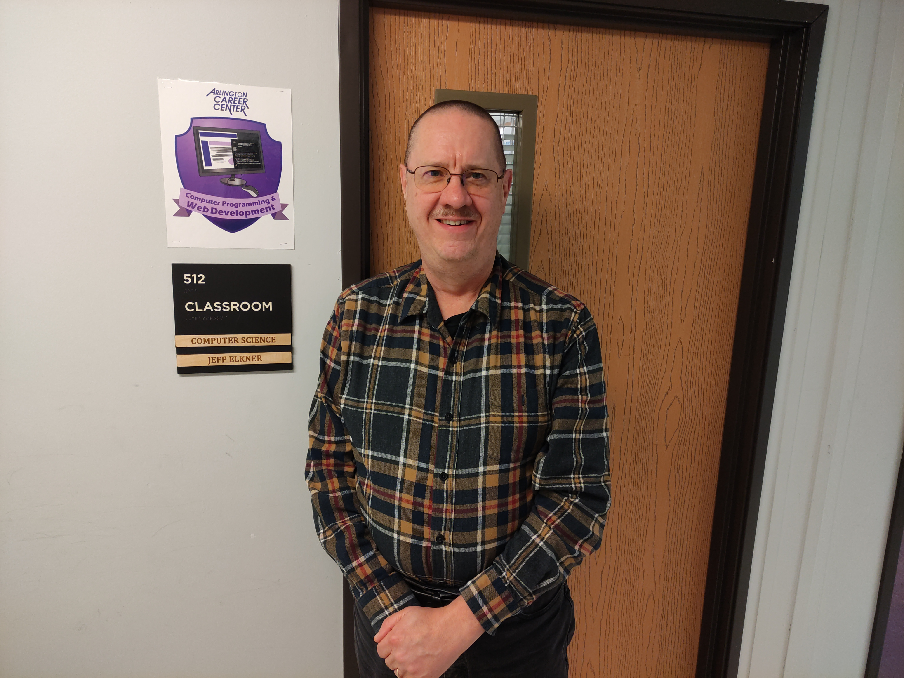
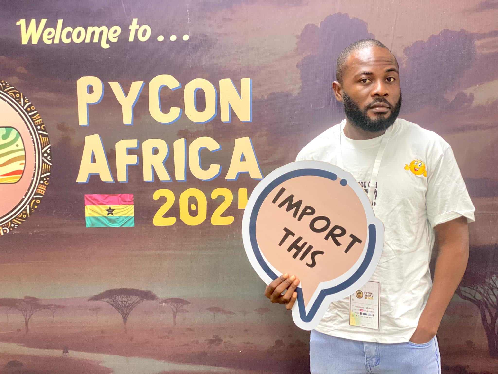

Meet the people who played vital roles in launching and supporting the Jetro Web Dev. Co-op.
Isaac Zawolo
Mr. Zawolo is the former Superintendent of the Monrovia Consolidated School System (MCSS) and a longtime friend of Jeff Elkner from Virginia.
He gave the tech program its first platform by allowing it to operate under his office, offering it institutional legitimacy and access to resources. His support helped the initiative gain early traction and visibility. Even after leaving office, he continues to be a strong advocate, offering moral and motivational support. Mr. Zawolo laid the foundation for acceptance and credibility in a way that would have been hard to achieve independently.

Jeff Elkner
Jeff Elkner is a Computer Science teacher at Arlington Career Center (ACC) in Virginia and a strong believer in Social Justice Computing.
He founded the tech program with a vision to use computing as a force for good. From the start, Jeff provided all financial, technical, and leadership support. He led the effort to transition the co-op from a small initiative into a fully registered tech company in Liberia. Without Jeff, the program would not exist. His dedication, mentorship, and consistency continue to drive its growth and sustainability.

Spencer Cooper
Spencer Cooper is an IT specialist at MCSS and served as a stabilizing leader after Jeff and Mr. Zawolo returned to the U.S.
He took charge of the team, provided a location for them to continue operations, and helped the co-op survive a critical transition period. His intervention was key in keeping the momentum alive until the program became officially registered in Liberia. Spencer's commitment brought structure, continuity, and a safe space to grow.